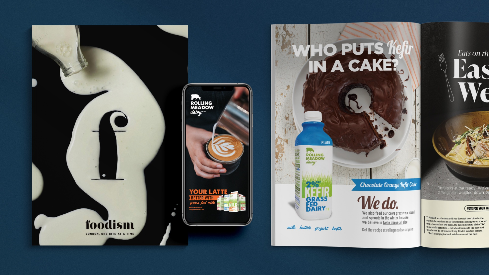

lead with taste. prove it with grass.
Rolling Meadow had a meaningful product difference. We changed the order of the story and made it matter to more people.

The grass-fed message was meaningful but not driving enough desire.
Lead with richer taste; use grass-fed as the reason to believe.
Better With, media partnerships, creators, coffee shops and retail.
Sales volume doubled in three months on a sub-$50K budget.
the proof was leading. the pleasure was buried.
Rolling Meadow was a pioneer in grass-fed dairy. That difference mattered, but research showed the functional grass-fed message was not resonating strongly enough on its own.
The audience had shifted toward food lovers who cared first about what made coffee, cooking and everyday rituals taste better. The strategy needed to meet them there without giving up the product truth.
A worthy production story asking shoppers to do the work of translating it into personal value.
Lead with the sensory reward. Keep the farming difference as credible proof.
everything good is better with rolling meadow.
borrow trust. create appetite. show up where taste lives.
We built the campaign through Foodism and Toronto Life partnerships, creator content, latte-art storytelling and a program with ten leading coffee shops. Product, editorial, retail and social reinforced the same taste-first idea.
Credible food environments that made the brand part of the city's taste conversation.
Sampling, signage and product presence placed the promise inside a real ritual.
Influencers and Barista Brian turned the product benefit into visual appetite.
Research, strategy, campaign platform, partnerships, content, influencer and retail activation by Smaller Agency.
Client: Rolling Meadow Dairy.